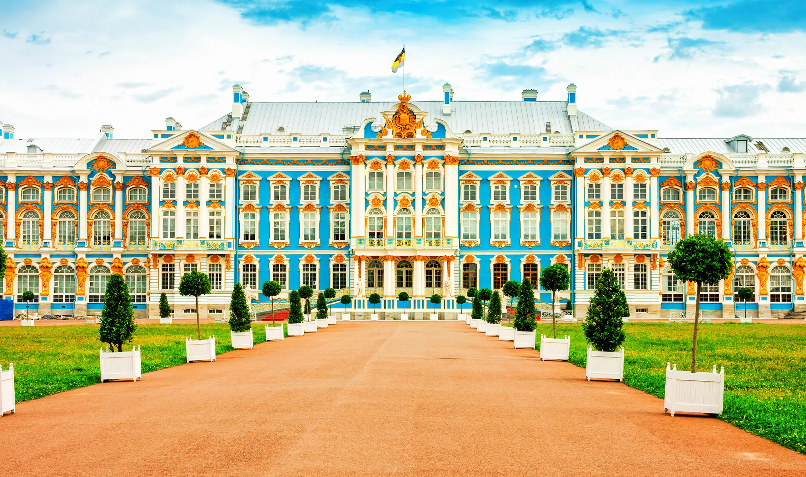
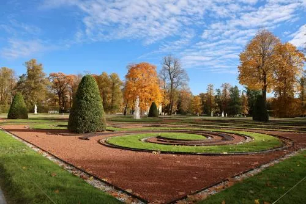
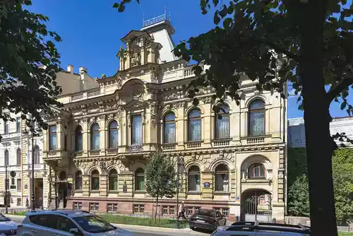

Откройте историю города
Четыре выставки для первого знакомства
Четыре предложения для выбора

Екатерининский дворец и Янтарная комната
Вы пройдете по знаменитой «Золотой анфиладе» Растрелли и замрете от восторга в Большом тронном зале площадью 800 кв. метров. Кульминация визита - легендарная Янтарная комната, «восьмое чудо света», возрожденная мастерами после войны за 24 года кропотливого труда. Александровский дворец Жемчужина Царского Села, открытая после масштабной реставрации только в 2021 году. Здесь родился и провел последние 13 лет правления Николай II.
Вы заглянете за кулисы частной жизни монархов: увидите Сиреневый кабинет императрицы, Мавританскую уборную, уютную Палисандровую гостиную и личные апартаменты, откуда царская семья отправилась в роковую ссылку.
На всем пути до Царского села вас будет сопровождать гид, который проведет экскурсию и расскажет много интересных фактов из истории про дорогу по которой вы будете ехать. Экскурсии по дворцам вам проведут непосредственно сотрудники ГМЗ Пушкин.
Что увидим, где побываем?

История дворца тесно переплелась с историей российской государственности. Отвоёванные во время Северной войны земли будущего Царского Села в июне 1710 года Пётр I преподнёс своей супруге, Марте Скавронской. Той, что в дальнейшем стала императрицей Екатериной I. Через семь лет архитектор Фридрих Браунштейн возвёл здесь для неё первый скромный дворец — «каменные палаты на 16 светлиц». После смерти Екатерины Царское Село стало любимой резиденцией дочери Петра, императрицы Елизаветы. Скромное жилище матери уже не соответствовало её вкусам и амбициям могущественной державы.
В 1750-х годах палаты были радикально перестроены по проекту придворного архитектора Франческо Бартоломео Растрелли. Они превратились в грандиозный дворец. Работы были масштабными: старые стены наращивали, к центральному корпусу пристраивали новые флигеля, украшали фасады и создавали знаменитые интерьеры. Именно при Елизавете дворец обрёл свой нарядный, вычурный облик. В этих стенах кипела светская жизнь, давали грандиозные балы, а императрица поражала гостей роскошью и обилием нарядов.

Екатерининский парк состоит из двух частей: регулярного Старого сада и пейзажного Английского парка. Старый (Голландский) сад основал, по преданию, сам Петр I. Эту легенду приводит в своем сочинении «Достопамятности Санкт-Петербурга и его окрестностей» (1817) П. П. Свиньин: «Петр I, заезжая иногда сюда прохлаждаться молоком к старой голландке Сарре, пленился местом сим…» и собственноручно насадил платановые и дубовые аллеи.
Так или иначе, но именно голландские мастера садово-паркового дела Я. Роозен и И. Фохт распланировали в 1720-х годах Старый сад на трех уступах перед царицыным дворцом. В это же время на третьем уступе были устроены Зеркальные пруды, а на речке Вангазе, стекавшей с холма, — еще два пруда: Верхний (Большой) и Мельничный, позже вошедший в систему Каскадных, или Нижних, прудов. В середине XVIII века сад был расширен, перепланирован и украшен скульптурой. Ф. Растрелли спроектировал павильоны «Эрмитаж» и «Грот», а также Катальную гору; Большой пруд с расположенным на острове люстгаузом (увеселительным павильоном) приобрел форму шестиугольника и был обведен аллеями. Наконец, в 1770-х годах архитекторы В. И. и И. В. Нееловы построили в саду комплекс Адмиралтейства, Эрмитажную кухню, Верхнюю и Нижнюю ванны.
Вдоль границы сада до самых Нижних прудов протянулся Продольный (Каскадный) канал с двенадцатью плотинами. Тогда же на территории к югу от дворца и вокруг Большого пруда, был разбит пейзажный «английский сад», начатый под руководством В. И. Неелова и завершенный садовым мастером И. Бушем.
Оказавшийся частью нового парка, Большой пруд подвергся перепланировке и был превращен в озеро; прямоугольные очертания Нижних прудов также были смягчены. В Старом саду на третьей террасе появились Полулунные пруды, сохранявшиеся вплоть до реконструкции этой части парка в 1960-х годах. Именно в это время водные поверхности, занимающие пятую часть территории Екатерининского парка, стали важной составляющей его образа. Естественный склон местности к северо-востоку позволил связать все водоемы в единую самотечную систему и устроить на ней небольшие, но бурные водопады. И. Ф. Яковкин, автор «Истории Села Царского», сообщал: «Для гулянья по большому пруду содержались всегда разные двувесельные мелкие суда; а в августе 1777 года привезены и спущены на большой пруд сделанные по Высочайшему повелению на партикулярной верфи два четыревесельных трешкоута, обошедшиеся построением в 507 рублей 71 коп. с позолотою резьбы в приличных местах и окрашением, один зеленаго, а другой краснаго цвета, краскою, на коих Ея Величество, по благоразсуждению, изволила иногда по большому пруду забавляться плаванием. Суда сии в торжественные праздники и доныне украшаемы бывают множеством разноцветных флагов, всегда для сего сохраняющихся в шлюбочном сарае, а при происходивших в садах Села Царского иллюминациях самым прелестным образом освещаемы бывали множеством разноцветных фонарей, по всем снастям и бортам, отсветом своим к поверхности водной производивших вид безподобный. Летом, по 1825 год, посреди большого пруда стояли на якоре двенадцатипушечная яхта и большой бот, а у пристани большого каскада всегда стоит готовых, в значительном числе двувесельных малых яликов, для желающих кататься по большому пруду, прикрепляемых к пристани железной цепью с замком, дабы никто из гуляющих по саду не мог их брать самовольно».
Екатерина II спешила явить просвещенной Европе сад, не только разбитый в новейшем вкусе, но и украшенный памятниками, прославляющими величие ее царствования. Так, в честь российских побед в русско-турецких войнах были воздвигнуты в 1770–1780-х годах Башня-руина, Чесменская, Морейская, Крымская колонны, Кагульский обелиск, Турецкий киоск и Турецкий каскад.

История Петергофа
Дата постройки: 1714 - 1723 гг.
Архитекторы: И. Браунштейн, Ж. Б. Леблон, Н. Микетти, Ф. Растрелли, А. Н. Воронихин, А. И. Штакеншнейдер.
Садовые мастера: Л. Гарнихфельт, А. Борисов, Б. Фок, Т. Тимофеев.
Петергоф, на протяжении 200 лет бывший парадной летней резиденцией императоров, неразрывно связан с нашей историей. Приморский парадиз строился как грандиозный триумфальный памятник, прославляющий величие России, завоевавшей в ходе Северной войны столь необходимый и желанный выход к Балтийскому морю.
Первое документальное упоминание Петергофа относится к 1705 году, когда он на голландский манер назывался "Питергоф" – "Петров двор".
Проект по праву можно назвать детищем самого Петра I – сохранилось более десяти его собственноручных рисунков, относящихся к Петергофу, и ещё большее количество чертежей с исправлениями и пометками. Даже после смерти императора, на протяжении полутора веков преображая летнюю резиденцию, архитекторы не только бережно сохраняли, но и продолжали воплощать все основные замыслы царя – реформатора.
Строительство резиденции, не уступающей по красоте и роскоши лучшим резиденциям европейских монархов, в том числе французскому Версалю, началось в 1714 году. Уже в августе 1723 года состоялся первый показ резиденции императором Петром I иностранным послам, причем к этому времени был распланирован Нижний парк, прорыт Морской канал, действовала часть фонтанов, были отделаны верхние палаты, а также построены дворцы "Монплезир" и "Марли". После Октябрьской революции 1917 года Петергоф превратился в крупный просветительский центр. В годы Великой Отечественной войны немецкие оккупанты варварски разрушили дворцы и парк. Восстановление началось с первых же дней после освобождения, и сегодня этот природный и рукотворный шедевр принимает своих гостей, восхищая и удивляя их, как прежде. В 1990 году архитектурно – парковый ансамбль "Петергоф" был внесен во Всемирный список культурного наследия ЮНЕСКО, а в 2008 году признан одним из 7 чудес России.

Строительство
В середине XIX века земельное владение № 28 по улице Сергиевской (современной Чайковского) занимал двухэтажный особняк в стиле «второго барокко», построенный в 1858—1860 гг. по проекту архитектора А. К. Кольмана для греческого консула И. Е. Кондоянаки. В 1896 году участок вместе с домом за 300 тысяч рублей выкупил коллежский советник Александр Фердинандович Кельх, кавалер многочисленных орденов и помощник директора Учительской семинарии Военного Ведомства[3]. Средства на покупку были взяты из приданого его супруги Варвары Петровны Кельх, урождённой Базановой, внучки крупного сибирского золотопромышленника И. И. Базанова и наследницы его колоссального состояния.
В 1899 году владение переписали на её имя. Для перестройки особняка Александр Кельх пригласил архитекторов Василия Шене и Владимира Чагина. По их проекту главное здание надстроили третьим этажом, переоформили фасады и интерьеры. В 1903 году к работам присоединился архитектор Карл Шмидт: под его руководством во дворе был построен готический павильон и окончательно сложился ансамбль отделки внутренних помещений.
В 1904 году Варвара Петровна эмигрировала в Париж, оставив особняк супругу и детям. С 1905-го на приисках Кельха снизилась добыча, и постепенно состояние семьи начало истощаться. Оформив развод в 1910 году, в 1914-м Александр Кельх продал особняк потомственному почетному гражданину Ивану Михайловичу Александрову, члену совета Торгового общества взаимного кредита.